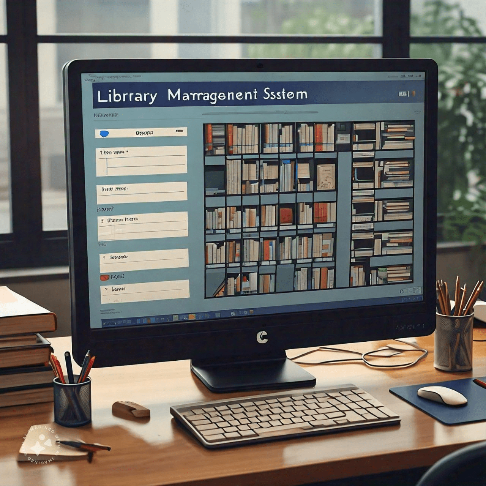

Innovative Problem Solver & Passionate Technologist
Turning ideas into impactful digital solutions
Hello! I'm Kurma Anil Kumar, currently pursuing a Master's degree and looking to embark on an exciting career as a software developer. I am passionate about coding, problem-solving, and creating innovative software solutions. Throughout my academic journey, I have developed a strong foundation in programming, algorithms, and software development practices. I am eager to apply my skills in a dynamic environment where I can continue to learn and grow. I am particularly interested in contributing to projects that make a meaningful impact and enjoy collaborating with teams to bring creative ideas to life.
Bebo Technologies Pvt. Ltd., Chandigarh
April 2022–July 2023
IIIT Hyderabad
Bebo Technologies Pvt. Ltd., Chandigarh
Lovely Professional University | CGPA: 7.02
Sri Gayatri Junior College | CGPA: 8.91
Pragna High School | CGPA: 8.8
